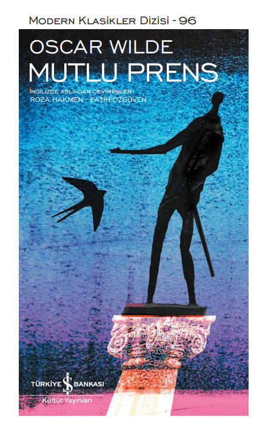
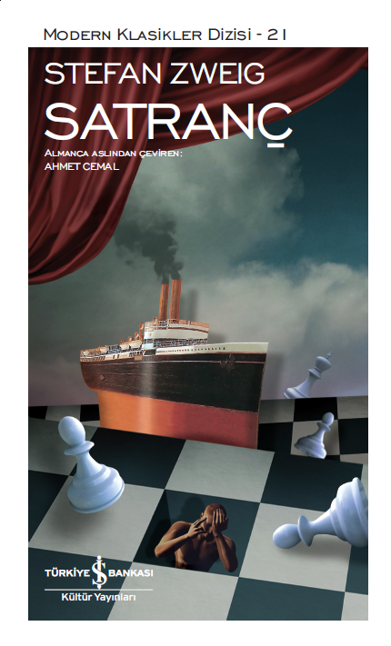
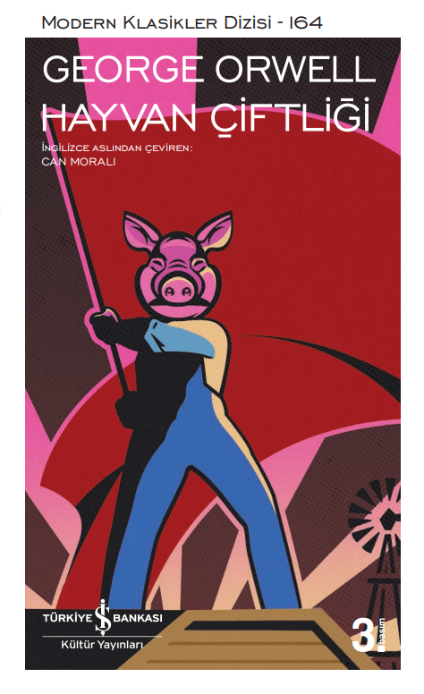

-

Mutlu Prens
Oscar Wilde’ın 1888’de yayımlanan Mutlu Prens’teki masalları oğulları için yazdığı düşünülse de, yazar hedef kitlesini “yediden yetmişe çocuk ruhlu insanlar, şaşırma ve sevinme gibi çocuksu yetilerini koruyanlar” olarak açıklamıştır. Wilde bu masallarda bencilliği ve duyarsızlığı gözler önüne serer ve eleştirir. Onun ana masal kişileri bazen hatalarını anlayarak pişmanlık duyarlar ve özgecil davranışlar sergilerler. Kimi zaman da gözlerini kör eden kibirden bir türlü kurtulamazlar. Mutlu Prens her ne kadar çıraklık döneminin ürünü olsa da, Wilde’ın masal ve alegori alanındaki ustalığını ortaya koyar.
OSCAR WILDE (1854-1900): İrlandalı şair ve oyun yazarı, Dublin’de dünyaya geldi. 19. yüzyıl sonunda ortaya çıkan “sanat için sanat” görüşünü savunan estetikçilik akımının İngiltere’deki savunucularındandır. Enniskillen’deki Portora Kraliyet Okulu’ndan sonra, bursla Dublin Üniversitesi’ne ve Oxford’daki Magdalen College’a devam etti. 1878’de Ravenna adlı uzun şiiriyle Newdigate Ödülü’nü kazandı. 1884’te İrlandalı ünlü bir avukatın kızı olan Constance Lloyd’la evlendi. 1891’de yayımladığı tek romanı The Picture of Dorian Gray (Dorian Gray’in Portresi), eleştirmenler tarafından ahlaksızlıkla suçlanmasına neden oldu. Wilde 1891 yılında Lord Arthur Savile’s Crime, and Other Stories (Lord Arthur Savile’in Suçu ve Diğer Öyküler) ve A House of Pomegranates’i (Narlı Ev) yayımladı. Töre komedisi türündeki oyunları Lady Windermere’s Fan (Lady Windermere’in Yelpazesi) ve A Woman of No Importance (Önemsiz Bir Kadın) büyük başarı kazandı. Son oyunları An Ideal Husband (İdeal Bir Koca) ile en başarılı yapıtı sayılan ve Victoria döneminin ikiyüzlülüğünü acımasızca sergileyen The Importance of Being Earnest (Ciddi Olmanın Önemi) 1895 yılında sahneye kondu. Wilde Fransa’da bir kulak enfeksiyonunun neden olduğu şiddetli bir beyin iltihabı sonucu aniden yaşamını yitirdi.
-

Satranç
Stefan Zweig, çok geniş bir psikoloji birikimini eserlerinde bütünüyle kullanmış ender yazarlardandır. Onun dünya edebiyatında bir biyografi yazarı olarak kazandığı haklı ünün temelinde de bu özelliği; yani yazarlığının yanı sıra çok usta bir psikolog olması yatar. Satranç, Zweig’ın psikolojik birikimini bütünüyle devreye soktuğu bir öyküdür; ve bu öykünün baş kişileri, tamamen yazarın biyografilerinde ele aldığı kişileri işleyiş biçimiyle sergilenmiştir. Zweig ölümünden hemen önce tamamladığı birkaç düzyazı metinden biri olan Satranç’ı kaleme aldığı sırada, karısı Lotte Zweig ile birlikte göç ettiği Brezilya’da yaşamaktaydı. Satranç’ta da, olay yeri olarak New York’dan Buenos Aires’e gitmekte olan bir yolcu gemisini seçmiştir. Bu gemide tamamen rastlantı sonucu karşılaşan üç kişi: yeni dünya satranç şampiyonu Mirko Czentovic, sıradan bir satranç oyuncusu olan anlatıcı ve bir zamanlar çok usta bir satranç oyuncusu olan, ama hayli zamandır satrançtan uzak kalmış bulunan Dr. B., öykünün aktörleridir.
Stefan Zweig 20 Ekim 1881’de Viyana’da doğdu. 1920-1928 yılları arasında yazdığı Üç Büyük Usta, Kendi Hayatının Şiirini Yazanlar, Kendileriyle Savaşanlar büyük ses getirdi. Hayatı boyunca her tür resmi ödülü reddeden Zweig 1940 yılında bir konferans için Güney Amerika’ya gitti ve hayatını orada sürdürdü. Zweig, 23 Şubat 1942 yılında ikinci eşi Lotte ile birlikte, yarattığı birçok roman kahramanı gibi savaşın neden olduğu derin bir umutsuzluk duygusuyla ölümü seçti.
-

Hayvan Çiftliği
Bir çiftlikte yaşayan hayvanlar, kendilerini sömüren insan efendilerini devirmiş, adalet ve eşitliğin hüküm sürdüğü ideal bir hayvan toplumu kurmak için büyük bir fırsat yakalamışlardır. Ancak diğer hayvanlardan daha zeki olan iktidar düşkünü domuzlar, zamanla devrimi yolundan saptırarak, eskisinden daha acımasız ve baskıcı bir diktatörlük kurarlar. Orwell 1945’te yayımlanan bu karşı-ütopyacı nükteli ve fantastik siyasal fablını yazarken, hedefinde 1917 Rus Devrimi ve “Stalin’in devrime ihaneti” vardı. Hayvan Çiftliği, iktidarlarını sağlamlaştırırken hak ve özgürlüklere göz diken politikacılara, otoriter rejimlerin halkları baskı altında tutmak için kullandıkları manipülasyon ve propaganda yöntemlerine karşı bir uyarıdır. İktidarın yozlaştırıcı etkisini hedef alan bu parlak hiciv, dünyada bugün de sürüp giden adaletsizliğe karşı hâlâ geçerli mesajıyla “zamansız” bir başyapıttır.
GEORGE ORWELL (1903-1950): Asıl adı Eric Arthur Blair olan İngiliz romancı, denemeci ve eleştirmen, Hayvan Çiftliği’nin yanı sıra totaliter yönetimlerin tehlikelerine dikkat çektiği karşı-ütopyacı romanı 1984 ile dünya çapında ün kazanmıştır. Hindistan’da dünyaya geldi. 1917-1921 yılları arasında Eton College’da okudu. 1922’den 1927’ye kadar Burma’da (bugün Myanmar) Hindistan İmparatorluk Polisi’nde bölge müfettiş yardımcısı olarak görev yaptı. Buradaki deneyimleri ilk romanı Burmese Days’e (1934; Burma Günleri) ilham verdi. The Road to Wigan Pier’i (1937; Wigan İskelesi Yolu) ve Franco’cu faşistlere karşı Cumhuriyetçilerin safında savaştığı İspanya İç Savaşı deneyimini anlattığı Homage to Catalonia’yı (1938; Katalonya’ya Selam) yazdıktan sonra, bir sanatoryuma yattı. II. Dünya Savaşı başlayınca BBC’nin Hindistan yayınları bölümünün başına getirildi ve 1943’e dek burada çalıştı. 1950’de uzun süredir tedavi gördüğü verem hastalığına yenik düştü.